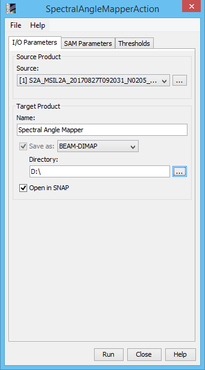
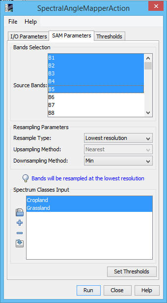
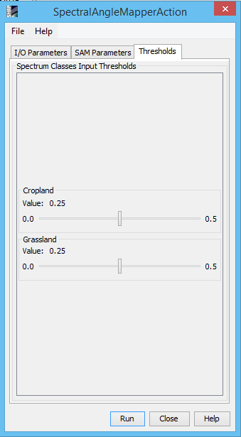

| Spectral Angle Mapper Processor | |

x= spectral signature vector of an image pixel;
y = spectral signature vector of a training area;
n = number of image bands.

Ck = land cover class k;
yk = spectral signature of class k;
yj = spectral signature of class j.
Source Product
Specify the source product. Target ProductName : Used to specify the name of the target product.
Save as :
The target product will be automatically saved. The
combo box presents a list of file formats, like BEAM-DIMAP, JPEG200, GeoTIFF, and HDF5 and other image formats.
The text field allows to specify a target directory. Open in ESA SNAP : Used to specify whether the target product should be opened in the Sentinel Toolbox. When the target product is not saved, it is opened in the Sentinel Toolbox automatically. |
 |
Bands selection
Specify the source product bands on which the SAM processor will be applied. Must be at least 2 bands. Multiple bands will be selected by using
the Ctrl key Resampling parameters
Resample Type Spectrum Classes InputThe tool buttons to the left of the list field are used to modify the list of Spectrum defined classes. They are:
In order to set the threshold for each class, the classes must be selected from the list and the "Set Thresholds" button must be pressed. This action will create
a slider bar for each class selected in the "Thresholds" tab. |
 |
Spectrum Classes Input Thresholds
Specify a threshold value for each spectrum class selected from the SAM parameters panel. The smaller the value the less likelihood that evaluated pixels
can make part of the specific class but the resulting pixels will be more appropriate as resemblance to the pixels defined class |
 |
The CSV format used to import and export spectrum classes is a plain text format.
It comprises a header line defining the spectrum classes. The second line defines if the respective input is user defined or is one used from
the shapes drawn using the rectangle drawing tool, polygon drawing tool or the ellipse drawing tool.
The values represent pixel position for each spectrum input class. First line is the X coordinate and the next one is the Y coordinate of a pixel and so on. The
number of inputs must be even. If two inputs are introduced it means that the spectral angle will define a class and use as reference a single pixel. If
4 values are introduced it means that the spectral angle will define a class and use as reference a mean value of the 2 pixels locations introduced. If 6 or
more values are introduced those will represent the corners of a polygon shape and the spectral angle will define a class and use as reference
a mean value of the pixels that are situated within the polygon shape defined by the input location pixels introduced.
It should be taken into consideration that the pixels locations must be within the image size. When working with multi-size products the pixel values introduced
by the user must be defined in the range of the size the target product will have meaning that if the user wants the target product to be resampled to the smallest
size, the pixel values must be taken from the band that has the smallest size and vice versa. In case of shapes drawn there is no problem as the algorithm automatically
transpose the shape accordingly with the target product size.
The , character is used to separate header and record fields. Given here is an example of the contents of a CSV spectrum class input file:
Forrest Cropland Grassland Ocean true false true false 53 66 76 570 147 266 273 761 70 N/A 76 603 160 N/A 280 780 130 N/A 90 N/A 200 N/A 273 N/A